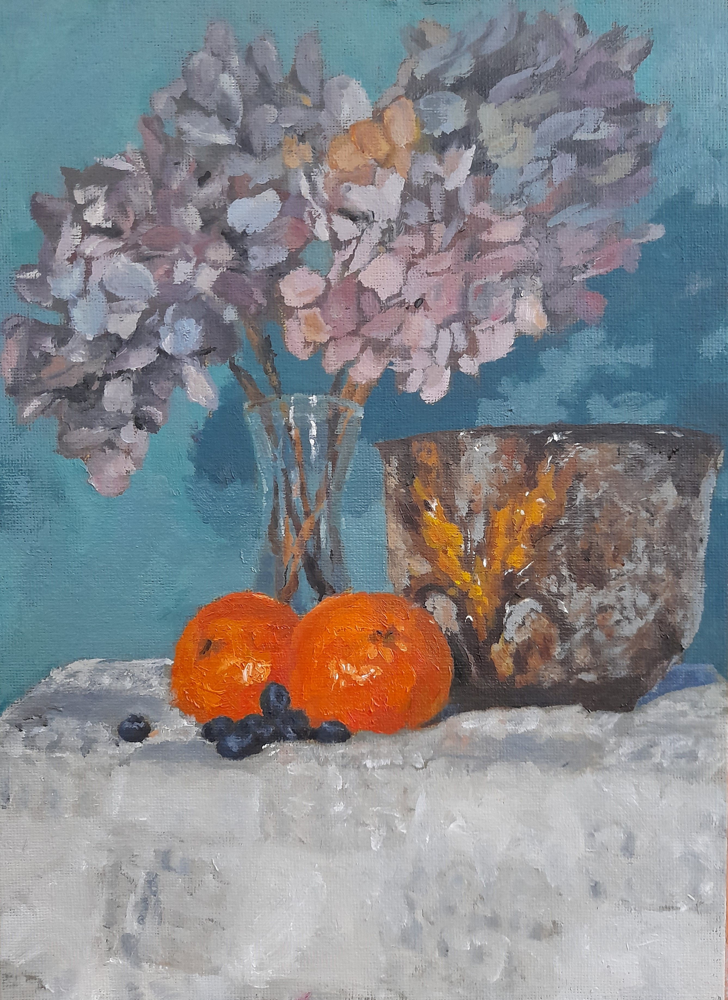
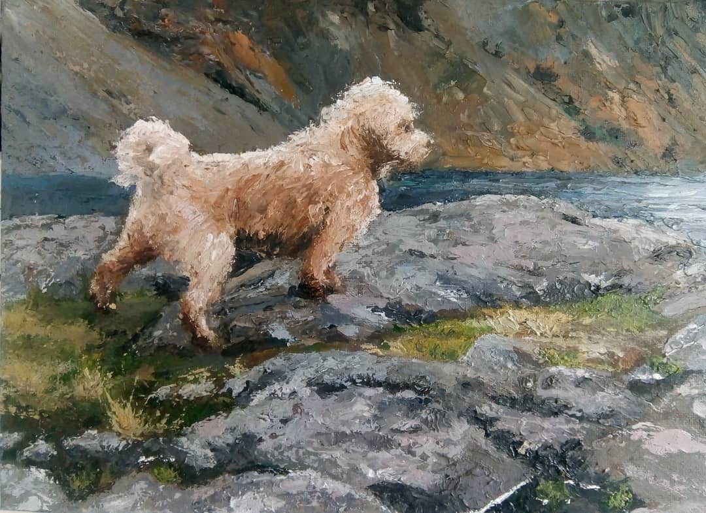
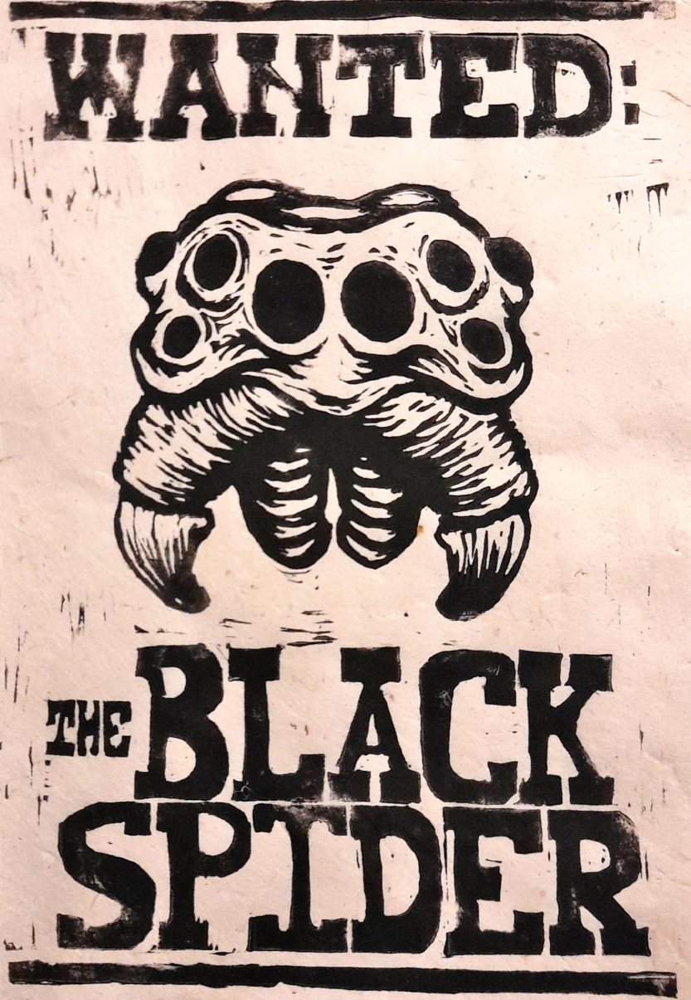

A selection of crafts and artwork I have produced over the years. Click the thumbnails for the full images.
Oil Paint

Painted from life during christmas 2021, oranges, blueberries and old hydrangea cuttingsPainted from a photo taken along the leeds liverpool canal near chorley.

Berty at wast water, painted using palette knives.
Lino Print

A wanted poster. This was created as a prop for a long running dungeons and dragons game.Made in exchange for cookies.
Ceramics
I cant find any photos :(
Water colour
An attempt to copy the style of illustrations in illuminated manuscripts. The piece celebrates the narrowest of victories over the basilisk encountered in the lair of Ras Nsi.The front of a farm building painted from life. I stayed here during a WWOOF near the dordogne france.